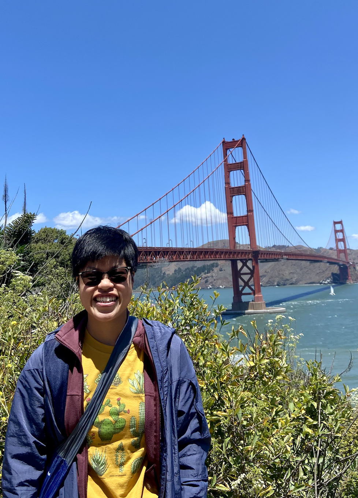

Hi, I’m Mileva Van Tuyl (mill-LAY-va van-TILE, after Mileva Marić Einstein). I have a background in data science, software development, and computer science. My professional interests focus on developing tools and technologies to address pressing health and social challenges.
In my current internship at IBM, I work to foster the adoption of trustworthy machine learning practices through the development of the AI Fairness 360 toolkit. Previously, I co-led the machine learning efforts of the Saving Face project at the MIT Media Lab in an effort to reduce the transmission of COVID-19.
During my undergraduate studies at Wellesley College, I served as a research assistant in the Wellesley Cred Lab and the Wellesley Physical Chemistry Lab.
While working in San Francisco this past summer, my favorite pastimes included sampling breads and burritos in the Mission District, sightseeing, and seeking out live jazz gigs in the city.